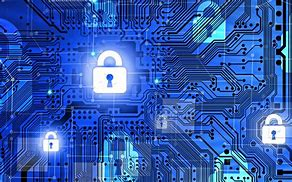

Sistemi e reti
Sistemi e reti
In un mondo sempre più connesso, la sicurezza dei sistemi informativi rappresenta una delle principali sfide dell’informatica moderna. Proteggere i dati, i dispositivi e le reti è diventato essenziale per garantire la fiducia degli utenti e la continuità dei servizi. La sicurezza informatica si basa su tre principi fondamentali: la riservatezza, l’integrità e la disponibilità delle informazioni.
La riservatezza assicura che solo gli utenti autorizzati possano accedere ai dati sensibili; l’integrità garantisce che le informazioni non vengano modificate in modo non autorizzato; infine, la disponibilità fa sì che i dati e i servizi siano sempre accessibili quando necessario.
Una buona gestione della sicurezza parte dalla valutazione dei rischi, ovvero dall’identificazione delle vulnerabilità e delle possibili minacce. Queste possono includere malware come virus e worm, attacchi DDoS, tecniche di phishing e ingegneria sociale, che puntano a ingannare gli utenti per ottenere accessi non autorizzati.
Per proteggere i sistemi, vengono utilizzati strumenti specifici. Uno dei più importanti è il firewall, un dispositivo o software che controlla il traffico in entrata e in uscita da una rete, bloccando o consentendo i pacchetti di dati secondo regole definite. I firewall possono essere hardware o software, e funzionano in base a politiche di autorizzazione che classificano il traffico come consentito o bloccato.
Un altro strumento essenziale è l’Access Control List (ACL), che consente di filtrare il traffico secondo parametri precisi come indirizzi IP, porte o protocolli. Le ACL standard esaminano solo l’indirizzo IP sorgente, mentre quelle estese permettono un filtraggio più dettagliato, ed è possibile esercitarsi nel loro utilizzo attraverso simulazioni con software come Packet Tracer.
Per quanto riguarda la gestione degli indirizzi IP, si utilizzano tecnologie come il NAT (Network Address Translation) e il PAT (Port Address Translation), che permettono di tradurre gli indirizzi privati della rete interna in indirizzi pubblici. Queste soluzioni aumentano la sicurezza e ottimizzano l’utilizzo degli indirizzi disponibili.
Altri strumenti fondamentali sono il proxy, che funge da intermediario tra client e server per filtrare le richieste, e la DMZ (Demilitarized Zone), una zona isolata della rete in cui vengono collocati i server accessibili dall’esterno, in modo da proteggere la rete interna da possibili attacchi.
Le VPN (Virtual Private Network) rappresentano un mezzo per creare canali sicuri tra dispositivi distanti. Le VPN site-to-site collegano due reti geograficamente separate, mentre le VPN client-to-site permettono a un singolo utente di accedere in modo sicuro alla rete aziendale. Queste tecnologie utilizzano protocolli come IPsec, AH, ESP e IKE per garantire la cifratura e l’autenticazione dei dati trasmessi.
Infine, nelle comunicazioni via web, i protocolli SSL/TLS sono essenziali per cifrare le connessioni e proteggere dati sensibili come credenziali di accesso e informazioni bancarie. Sono alla base del protocollo HTTPS, riconoscibile dal lucchetto visibile nei browser.
Conclusione
Ho scelto di approfondire il tema della sicurezza informatica perché lo considero uno degli aspetti più affascinanti e cruciali del mondo digitale. Mi appassiona capire come proteggere i dati e i sistemi da minacce sempre più complesse, e trovo stimolante il continuo aggiornamento che questo ambito richiede. La sicurezza non è solo una questione tecnica, ma anche di responsabilità: garantire un ambiente digitale sicuro significa tutelare le persone e le informazioni che ci riguardano ogni giorno.